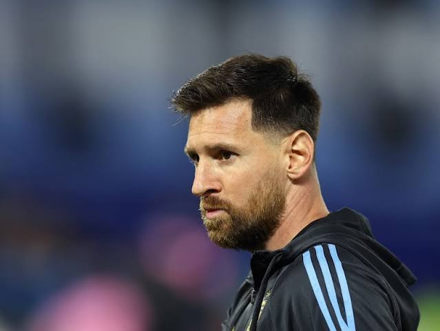
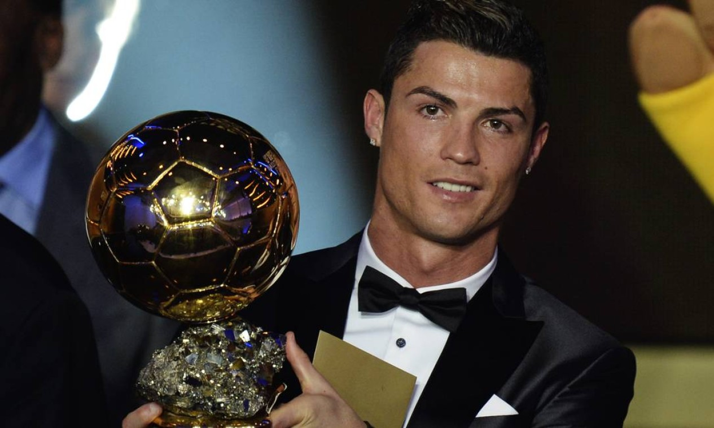
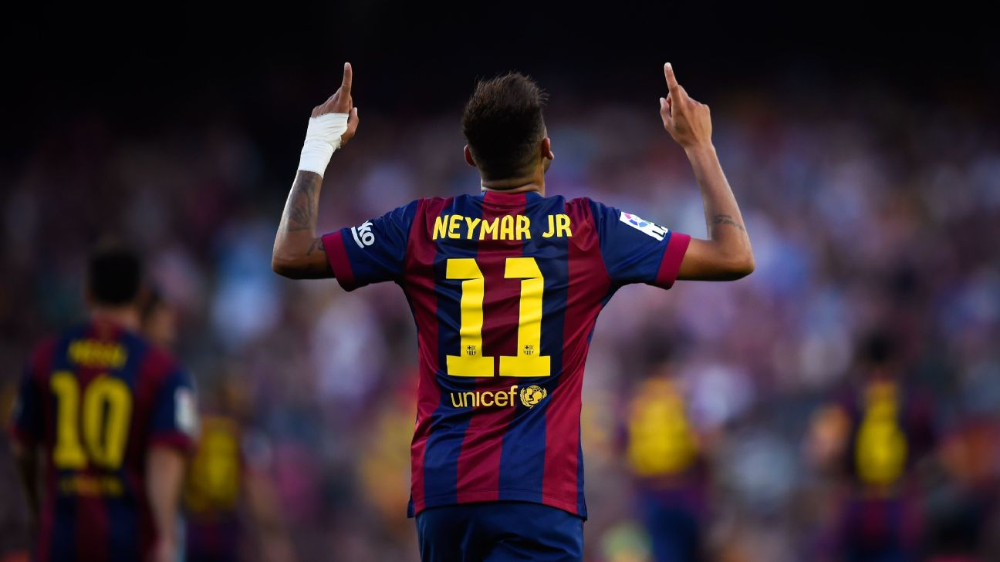

Como foi a Champions dos craques em 2014?
Messi
A campanha de Messi na Champions 2013/2014 ficou marcada como uma das menos impactantes de sua carreira. Apesar dos gols na fase de grupos e contra o Manchester City, ele não conseguiu ser decisivo contra o Atlético. Além disso, problemas físicos ao longo da temporada afetaram seu desempenho. Foi um ano de transição para o Barcelona, que viu sua hegemonia europeia ser interrompida enquanto tempos como Atlético de Madrid e Real Madrid emergiam como forças dominantes Para Messi, a temporada serviu como aprendizado e motivação. Ele voltou mais forte no ano seguinte, contribuindo para o histórico triplo do Barcelona em 2014/2015, consolidando ainda mais seu legado no futebol europeu.
Cristiano Ronaldo
A temporada 2013/2014 da Liga dos Campeões da UEFA foi histórica para Cristiano Ronaldo. O craque português viveu um dos melhores momentos de sua carreira e foi peça-chave para levar o Real Madrid ao tão aguardado décimo título europeu,"A Décima". A Champions de 2013/2014 solidificou ainda mais Cristiano Ronaldo como um dos maiores jogadores da história da competição. Ele não foi apenas o artilheiro, mas também o protagonista de momentos decisivos, conduzindo o Real Madrid ao título histórico da "La Décima" .
Neymar
Neymar fez sua estreia na Liga dos Campeões e viveu um ano de adaptação ao futebol europeu. Ele teve momentos de brilho, como o hat-trick contra o Celtic na fase de grupos, mas não conseguiu ser decisivo nas fases eliminatórias. A eliminação do Barcelona para o Atlético de Madrid nas quartas mostrou que Neymar ainda precisou de tempo para crescer nas competições deste nível.